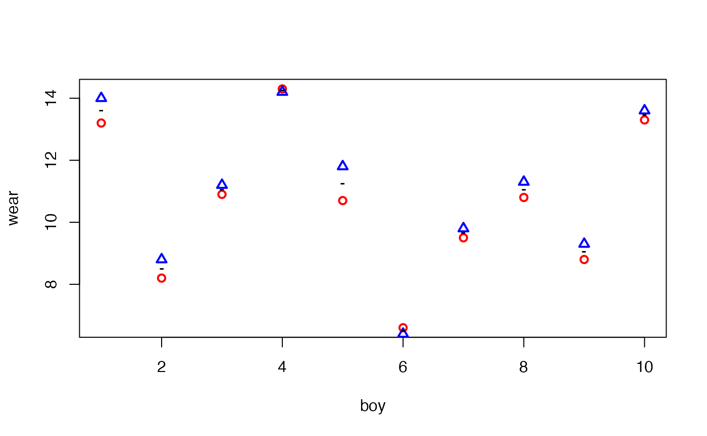

a01-pbkrtest.rmd## Loading required package: pbkrtest## Loading required package: lme4## Loading required package: MatrixPackage version: 0.5.3
The data is a list of two vectors, giving the wear of shoes of materials A and B for one foot each of ten boys.
data(shoes, package="MASS")
shoes## $A
## [1] 13.2 8.2 10.9 14.3 10.7 6.6 9.5 10.8 8.8 13.3
##
## $B
## [1] 14.0 8.8 11.2 14.2 11.8 6.4 9.8 11.3 9.3 13.6A plot reveals that boys wear their shoes differently.
plot(A ~ 1, data=shoes, col="red",lwd=2, pch=1, ylab="wear", xlab="boy")
points(B ~ 1, data=shoes, col="blue", lwd=2, pch=2)
points(I((A + B) / 2) ~ 1, data=shoes, pch="-", lwd=2)
One option for testing the effect of materials is to make a paired \(t\)–test, e.g. as:
## # A tibble: 1 × 8
## estimate statistic p.value parameter conf.low conf.high method altern…¹
## <dbl> <dbl> <dbl> <dbl> <dbl> <dbl> <chr> <chr>
## 1 -0.41 -3.35 0.00854 9 -0.687 -0.133 Paired t-test two.sid…
## # … with abbreviated variable name ¹alternativeTo work with data in a mixed model setting we create a dataframe, and for later use we also create an imbalanced version of data:
boy <- rep(1:10, 2)
boyf<- factor(letters[boy])
material <- factor(c(rep("A", 10), rep("B", 10)))
## Balanced data:
shoe.bal <- data.frame(wear=unlist(shoes), boy=boy, boyf=boyf, material=material)
head(shoe.bal)## wear boy boyf material
## A1 13.2 1 a A
## A2 8.2 2 b A
## A3 10.9 3 c A
## A4 14.3 4 d A
## A5 10.7 5 e A
## A6 6.6 6 f A
## Imbalanced data; delete (boy=1, material=1) and (boy=2, material=b)
shoe.imbal <- shoe.bal[-c(1, 12),]We fit models to the two datasets:
lmm1.bal <- lmer( wear ~ material + (1|boyf), data=shoe.bal)
lmm0.bal <- update(lmm1.bal, .~. - material)
lmm1.imbal <- lmer(wear ~ material + (1|boyf), data=shoe.imbal)
lmm0.imbal <- update(lmm1.imbal, .~. - material)The asymptotic likelihood ratio test shows stronger significance than the \(t\)–test:
## refitting model(s) with ML (instead of REML)## # A tibble: 2 × 9
## term npar AIC BIC logLik deviance statistic df p.value
## <chr> <dbl> <dbl> <dbl> <dbl> <dbl> <dbl> <dbl> <dbl>
## 1 lmm0.bal 3 67.9 70.9 -31.0 61.9 NA NA NA
## 2 lmm1.bal 4 61.8 65.8 -26.9 53.8 8.09 1 0.00445## refitting model(s) with ML (instead of REML)## # A tibble: 2 × 9
## term npar AIC BIC logLik deviance statistic df p.value
## <chr> <dbl> <dbl> <dbl> <dbl> <dbl> <dbl> <dbl> <dbl>
## 1 lmm0.imbal 3 63.9 66.5 -28.9 57.9 NA NA NA
## 2 lmm1.imbal 4 60.8 64.3 -26.4 52.8 5.09 1 0.0240The Kenward–Roger approximation is exact in certain balanced designs in the sense that the approximation produces the same result as the paired \(t\)–test.
## # A tibble: 1 × 5
## type stat ndf ddf p.value
## <chr> <dbl> <int> <dbl> <dbl>
## 1 Ftest 11.2 1 9.00 0.00854## F-test with Kenward-Roger approximation; time: 0.15 sec
## large : wear ~ material + (1 | boyf)
## small : wear ~ (1 | boyf)
## stat ndf ddf F.scaling p.value
## Ftest 11.215 1.000 9.000 1 0.008539 **
## FtestU 11.215 1.000 9.000 0.008539 **
## ---
## Signif. codes: 0 '***' 0.001 '**' 0.01 '*' 0.05 '.' 0.1 ' ' 1## # A tibble: 2 × 6
## type stat ndf ddf F.scaling p.value
## <chr> <dbl> <int> <dbl> <dbl> <dbl>
## 1 Ftest 11.2 1 9.00 1 0.00854
## 2 FtestU 11.2 1 9.00 NA 0.00854For the imbalanced data we get
## # A tibble: 1 × 5
## type stat ndf ddf p.value
## <chr> <dbl> <int> <dbl> <dbl>
## 1 Ftest 5.99 1 7.02 0.0442## F-test with Kenward-Roger approximation; time: 0.10 sec
## large : wear ~ material + (1 | boyf)
## small : wear ~ (1 | boyf)
## stat ndf ddf F.scaling p.value
## Ftest 5.9893 1.0000 7.0219 1 0.04418 *
## FtestU 5.9893 1.0000 7.0219 0.04418 *
## ---
## Signif. codes: 0 '***' 0.001 '**' 0.01 '*' 0.05 '.' 0.1 ' ' 1## # A tibble: 2 × 6
## type stat ndf ddf F.scaling p.value
## <chr> <dbl> <int> <dbl> <dbl> <dbl>
## 1 Ftest 5.99 1 7.02 1 0.0442
## 2 FtestU 5.99 1 7.02 NA 0.0442Estimated degrees of freedom can be found with
## bal_ddf imbal_ddf
## 9.000000 7.021904Notice that the Kenward-Roger approximation gives results similar to but not identical to the paired \(t\)–test when the two boys are removed:
## # A tibble: 1 × 8
## estimate statistic p.value parameter conf.low conf.high method altern…¹
## <dbl> <dbl> <dbl> <dbl> <dbl> <dbl> <chr> <chr>
## 1 -0.337 -2.39 0.0483 7 -0.672 -0.00328 Paired t-test two.sid…
## # … with abbreviated variable name ¹alternativeThe Satterthwaite approximation is exact in certain balanced designs in the sense that the approximation produces the same result as the paired \(t\)–test.
sat.bal <- SATmodcomp(lmm1.bal, lmm0.bal)
sat.bal |> tidy()## # A tibble: 1 × 5
## type statistic ndf ddf p.value
## <chr> <dbl> <int> <dbl> <dbl>
## 1 Ftest 11.2 1 9.00 0.00854
sat.imbal <- SATmodcomp(lmm1.imbal, lmm0.imbal)
sat.imbal |> tidy()## # A tibble: 1 × 5
## type statistic ndf ddf p.value
## <chr> <dbl> <int> <dbl> <dbl>
## 1 Ftest 6.00 1 7.01 0.0441Estimated degrees of freedom can be found with
## bal_ddf imbal_ddf
## 9.000000 7.010863Parametric bootstrap provides an alternative but many simulations are often needed to provide credible results (also many more than shown here; in this connection it can be useful to exploit that computations can be made en parallel, see the documentation):
## # A tibble: 2 × 4
## type stat df p.value
## <chr> <dbl> <dbl> <dbl>
## 1 LRT 8.09 1 0.00445
## 2 PBtest 8.09 NA 0.00998## # A tibble: 5 × 5
## type stat df ddf p.value
## <chr> <dbl> <dbl> <dbl> <dbl>
## 1 LRT 8.09 1 NA 0.00445
## 2 PBtest 8.09 NA NA 0.00998
## 3 Gamma 8.09 NA NA 0.00693
## 4 Bartlett 7.29 1 NA 0.00692
## 5 F 8.09 1 20.3 0.00992For the imbalanced data, the result is similar to the result from the paired \(t\)–test.
## # A tibble: 2 × 4
## type stat df p.value
## <chr> <dbl> <dbl> <dbl>
## 1 LRT 5.09 1 0.0240
## 2 PBtest 5.09 NA 0.0319## # A tibble: 5 × 5
## type stat df ddf p.value
## <chr> <dbl> <dbl> <dbl> <dbl>
## 1 LRT 5.09 1 NA 0.0240
## 2 PBtest 5.09 NA NA 0.0319
## 3 Gamma 5.09 NA NA 0.0320
## 4 Bartlett 4.25 1 NA 0.0393
## 5 F 5.09 1 12.0 0.0434The matrices involved in the random effects can be obtained with
shoe3 <- subset(shoe.bal, boy<=5)
shoe3 <- shoe3[order(shoe3$boy), ]
lmm1 <- lmer( wear ~ material + (1|boyf), data=shoe3 )
str( SG <- get_SigmaG( lmm1 ), max=2)## List of 3
## $ Sigma :Formal class 'dgCMatrix' [package "Matrix"] with 6 slots
## $ G :List of 2
## ..$ :Formal class 'dgCMatrix' [package "Matrix"] with 6 slots
## ..$ :Formal class 'dgCMatrix' [package "Matrix"] with 6 slots
## $ n.ggamma: int 2
round( SG$Sigma*10 )## 10 x 10 sparse Matrix of class "dgCMatrix"## [[ suppressing 10 column names 'A1', 'B1', 'A2' ... ]]##
## A1 53 52 . . . . . . . .
## B1 52 53 . . . . . . . .
## A2 . . 53 52 . . . . . .
## B2 . . 52 53 . . . . . .
## A3 . . . . 53 52 . . . .
## B3 . . . . 52 53 . . . .
## A4 . . . . . . 53 52 . .
## B4 . . . . . . 52 53 . .
## A5 . . . . . . . . 53 52
## B5 . . . . . . . . 52 53
SG$G## [[1]]
## 10 x 10 sparse Matrix of class "dgCMatrix"## [[ suppressing 10 column names 'A1', 'B1', 'A2' ... ]]##
## A1 1 1 . . . . . . . .
## B1 1 1 . . . . . . . .
## A2 . . 1 1 . . . . . .
## B2 . . 1 1 . . . . . .
## A3 . . . . 1 1 . . . .
## B3 . . . . 1 1 . . . .
## A4 . . . . . . 1 1 . .
## B4 . . . . . . 1 1 . .
## A5 . . . . . . . . 1 1
## B5 . . . . . . . . 1 1
##
## [[2]]
## 10 x 10 sparse Matrix of class "dgCMatrix"
##
## [1,] 1 . . . . . . . . .
## [2,] . 1 . . . . . . . .
## [3,] . . 1 . . . . . . .
## [4,] . . . 1 . . . . . .
## [5,] . . . . 1 . . . . .
## [6,] . . . . . 1 . . . .
## [7,] . . . . . . 1 . . .
## [8,] . . . . . . . 1 . .
## [9,] . . . . . . . . 1 .
## [10,] . . . . . . . . . 1